Arbeiten mit Google Tests im Ads Konto (A/B-Test und mehr)
Online-Marketing besteht aus Tests, Tests und noch einmal Tests. Dabei hilft vor allem die Tatsache, dass die Tests im Online Marketing schnell aufgesetzt werden können. Als Online Marketing Verantwortliche können wir unsere Daten im jeweiligen Backend der unterschiedlichen Werbetools oder auch mit Hilfe von Webanalyse-Tools innerhalb kürzester Zeit auswerten. Google unterstützt die Ideen der Tests im Google Ads Konto. Hier können A/B Tests erstellt und ausgewertet werden. Bei ausreichender Datenmenge erhält der Google Ads Admin auch Einschätzungen dazu, ob die Ergebnisse statistisch signifikant, oder eher zufällig zustande gekommen sind. Daher sollte sich jeder Google Ads Nutzer die Testmöglichkeiten im Ads Konto einmal näher anschauen. In diesem Beitrag zeige ich dir, wie du diese Tests im Ads Konto erstellts und was du beachten solltest.
Inhaltsverzeichnis
Wozu Tests im Google Ads Konto?
Seit Google Ads bzw. AdWords auf dem Markt ist, haben Kampagnenmanager schon immer Tests im Konto durchgeführt. Früher wurden diese Tests jedoch zeitlich versetzt erstellt und ausgewertet. Nachdem eine Kampagne zirka ein bis zwei Monate ausgespielt worden war, wurden Änderungen zur Optimierung durchgeführt. Danach lief dann die Kampagne mit den Änderungen auch wieder ein bis zwei Monate. Am Ende wurden die Daten der Kampagne mit den beiden unterschiedlichen Einstellungen ausgewertet und der vermeintliche Sieger ermittelt.
Hinweis: Im Google Ads Konto gibt es bei der Auswahl der Zeiträume einen Regler, um zwei unterschiedliche Zeiträume miteinander zu vergleichen, so dass Performanceunterschiede einfach ausgewertet werden können.
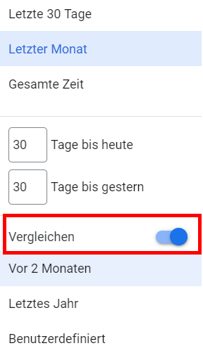Ein Zeitraumvergleich kann einfach per Regler zum Bericht zugefügt werden
Es ist jedoch besser die Testmöglichkeit im Google Ads Werbetool zu nutzen. Du benötigst dann den Regler für einen Zeitvergleich nicht, da mit Hilfe der Google Tests die Ausgangs- und die Test-Kampagne parallel zur gleichen Zeit (und mit einem gemeinsamen Budget) getestet werden. Bei einem Test zu unterschiedlichen Zeitpunkten könnten äußere Einflüsse, wie z. B. Urlaubszeit, das jeweils aktuelle Wetter, ein großes Sportereignis, die veränderten Marketingaktivitäten eines Mitbewerbers, aber auch Pandemie und ähnliches, zu Änderungen des Such- und Klickverhaltens sowie des Kaufinteresses führen. Somit kannst du bei der Auswertung eines zeitlich versetzten Tests am Ende nicht sicher sein, ob eine Performanceveränderung auf die Änderungen in der Kampagne zurückzuführen ist oder ob es nur daran liegt, dass sich die Suchanfragen oder das Kaufverhalten verändert haben.
Vorteile von A/B Tests im Google Ads Konto
Wenn du den A/B Test im Ads Konto nutzt, dann können jedoch zwei Kampagnen parallel zur gleichen Zeit laufen. In der Einstellung erhalten die beiden Kampagnen beispielsweise jeweils 50 % des Traffics und nutzen das gleiche Budget. Somit kann bei gleichen äußeren Umständen genauer getestet werden, was besser und was schlechter funktioniert.
Was du genau testen möchtest, ist letztlich dir überlassen. Wichtig ist jedoch, dass gleichzeitig immer nur eine Idee verbunden mit wenigen Änderungen an der Kampagne getestet wird. Auf diese Weise kannst du besser erkennen, welche Einstellungen am Ende für eine Änderung der Performance verantwortlich sind. Wenn du zu viele Einstellungen gleichzeitig veränderst oder mehre Optimierungsideen austesten möchtest, dann ist oft nicht klar, welche Änderung am Ende für das bessere (oder auch schlechtere) Ergebnis verantwortlich ist.
Wichtiger Hinweis: Im Google Ads Konto können pro Kampagne bis zu fünf Tests erstellt werden, es kann jedoch nur jeweils ein Test gleichzeitig ausgeführt werden.
Ideen für Tests im Google Ads Konto
Folgende Ideen dienen oft als Grundlage für den Test einer Google Ads Kampagne:
Navigiere in deinem Google Ads Konto in der hellgrauen Navigationsleiste ganz nach unten und klicke auf den Unterpunkt „Tests > Alle Tests“.
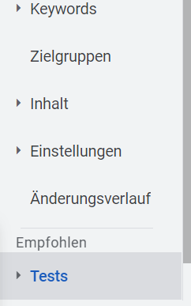Einen Google Ads Test erstellst du unter dem Menüpunkt „Tests > Alle Tests“.
Im nächsten Schritt klickst du auf den blauen Kreis mit dem weißen Pluszeichen und erstellst einen neuen Test vom Typ „Benutzerdefinierter Test“. Unter diesem Punkt kannst du die Standardtests für Such- und Displayanzeigen erstellen. Am Ende dieses Beitrags erläutere ich dir noch die Möglichkeiten für die speziellen Tests zu Text- und Videoanzeigen.
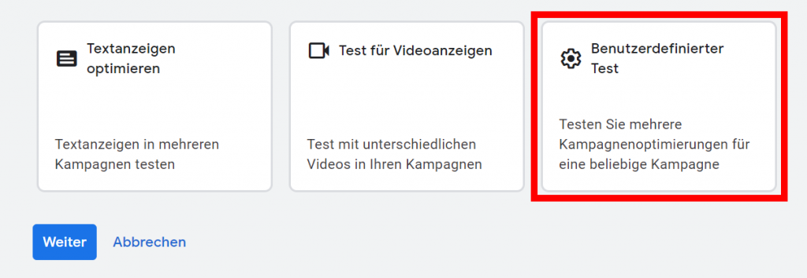Nutze den Benutzerdefinierten Test für deine Suchkampagnen.
Nachdem du den benutzerdefinierten Test ausgewählt hast, kannst du den gewünschten Kampagnentyp (Display- oder Such-Kampagne) per Radiobutton bestimmen. Möchtest du die Standard Google-Suchkampagnen testen, dann wähle den Punkt Suchen aus und klicke danach auf den Button „Weiter“.
Die folgenden Ausführungen beziehen sich auf den Kampagnentyp Suchen. Diese Kampagnen werden in der Praxis insgesamt am häufigsten genutzt. Falls du jedoch Displaykampagnen im Einsatz hast, kannst du analog die folgenden Einstellungen auch für den Typ Display vornehmen.
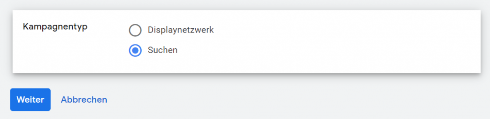Wähle den gewünschten Kampagnentyp aus – in unserem Beispiel „Suchen“.
Testname festlegen und Kampagne auswählen
Die nächsten Schritte dienen zur Einrichtung des Tests. Zunächst erhält jeder Test einen individuellen, eindeutigen Namen. Optional kann dazu auch noch eine eigene Beschreibung eingestellt werden, damit du den Test später einfacher wiedererkennen kannst.
Nach der Vergabe des Namens muss die sogenannte Ausgangskampagne gewählt werden. Diese bestehende Kampagne dient als Grundlage für den Test. Per Klick auf den Bearbeitungsstift kann die Kampagne aus den vorhandenen Kampagnen im Google Ads Konto ausgewählt werden. Die Ausgangskampagne wird kopiert und an dieser Kopie werden dann die Änderungen vorgenommen, die als Testgrundlage dienen sollen.
Die Kopie erhält den Namen der Ausgangskampagne erweitert um den Testnamen. Es ist daher wichtig, dass der Testname mit Bedacht gewählt wird. So kannst du später am Namen schon die Testidee erkennen.
In unserem Beispiel trägt die Ausgangskampagne den Namen „Beispiel-Kampagne“ und die Kopie hat den Namen „Beispiel-Kampagne LP-Test„.
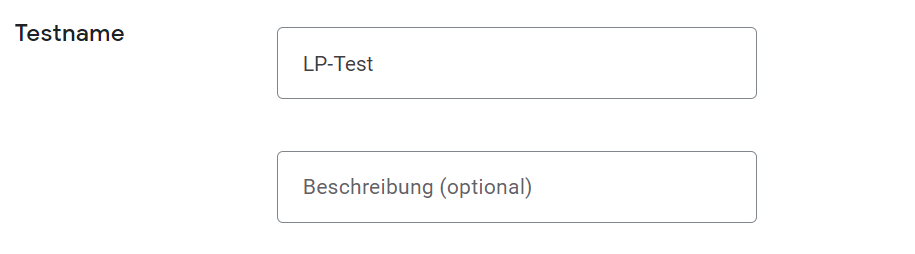Der Testname wird als Suffix zum Kampagnenname der Ausgangskampagne hinzugefügt
Zwei wichtige Hinweise zu den Kampagnen:
Bei der Wahl der Ausgangskampagnen dürfen keine Kampagnen mit gemeinsamen Budget gewählt werden. Die Ausgangs- und die Testkampagne nutzen während des Tests zusammen ein Budget, damit Anzeigenauslieferungen und Anzeigenklicks entsprechend der Testeinstellung verteilt werden können. Bei Ausgangskampagnen mit einem gemeinsamem Budget wäre diese Aufteilung nicht möglich.
Conversion werden nicht automatisch von der Ausgangskampagne in die Testkampagne kopiert. Diese Information ist wichtig, falls du individuelle Conversions in der Ausgangskampagne festgelegt hast. In diesem Fall musst du die Ziele einmal manuell für die neue Testkampagne kopieren (siehe auch folgenden Hinweis von Google).
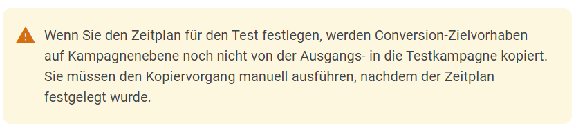Google-Hinweis zu den Conversions für die Testkampagne.
Änderungen an der Kampagnen-Kopie vornehmen
Nach dem Klick auf Speichern und fortfahren wird dir die neue Testkampagne mit dem Suffix angezeigt (in unserem Beispiel: Beispiel-Kampagne LP-Test).
Die neue Testkampagne
Per Klick auf den Kampagnennamen kannst du nun Änderungen an der Kampagnen-Kopie durchführen. Die Änderungen, die du vornehmen möchtest, solltest du bereits bei der Anlage deiner Testidee festgelegt haben.
Falls du wie in unserem fiktiven Beispiel zwei unterschiedliche Landingpages für deine Kampagne testen möchtest, dann navigierst du zu den Anzeigen in der Test-Kopie und änderst dort dann die finale URL der Anzeigen. Denke daran, dass du deine Änderungen in der Testkampagne abspeicherst.
Änderungen an der finalen URL für Landingpage-Test.
Bei anderen Testideen werden analog zu den Testideen die Keyword-Optionen, die Gebotsstrategien, usw. in der Test-Kopie geändert.
Planung der Testdurchführung
Nachdem du die Änderungen in der neuen Test-Kampagne vorgenommen hast, klickst du im Headerbereich auf „Schedule“, um den Plan für deinen Test zu erstellen.
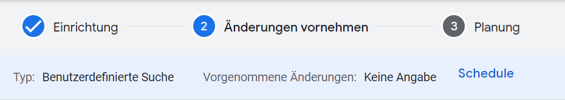Die letzten Einstellung zum geplanten Test werden unter „Schedule“ vorgenommen.
Zunächst musst du deine Testziele festlegen, damit das Ads System später – nach Ablauf der Testzeit – „beurteilen“ kann, ob durch die Veränderungen in der Test-Kopie die gewünschten Effekte erzielt wurden. Bei den Testzielen kannst du festlegen, welche wichtigen KPIs erhöht oder auch gesenkt werden sollen.
Für unser Beispiel habe ich die Conversions (Ziele) ausgewählt. Die Conversions, also beispielsweise die Käufe im Webshop oder auch die erzielten Leads via Online-Formular sollen in unserem Fall erhöht werden. Nach meiner Testidee soll sich die neue Landingpage im Vergleich zur alten Situation als besser erweisen und am Ende mehr Kunden oder Käufe, etc. erzielen. Werden die gesteckten Ziele nach der Testphase nicht erreicht, dann kann die Kampagne mit der alten Landingpage weiterlaufen. Eventuell muss ein neuer Test mit einer weiter verbesserten Landingpage aufgesetzt werden.
Optional kannst du für den Google Ads Test auch noch ein zweites Ziel festlegen. In unserem Fall möchte ich die Kosten pro Conversion (Cost-per-Conversion) senken. Diese beiden eingestellten Ziele sind gut vereinbar. Ich möchte zwar mehr Conversions erzielen, diese sollen aber nicht durch höhere Klickpreise und somit am Ende durch höhere Kosten erreicht werden – sondern durch die optimierte Landingpage. Wenn sich bei gleichem Google Ads Budget der Klickpreis nicht groß verändert, dann erziele ich natürlich auch niedrige Kosten pro Conversion.
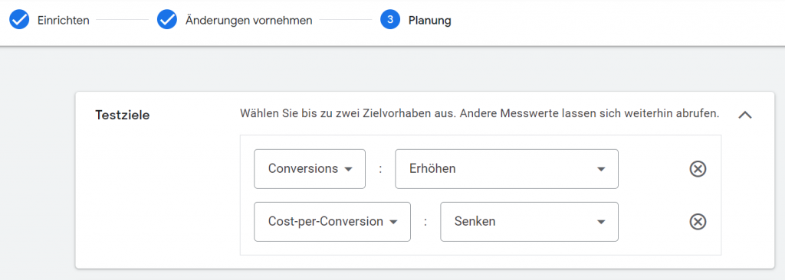Vorgabe der Testziele für den neu erstellten Kampagnentest.
Ein weiterer wichtiger Punkt ist die Testaufteilung in Bezug auf Zugriffe und Budget. Google empfiehlt eine Aufteilung von 50% Testkampagne und 50% Ausgangskampagne. Du kannst aber auch durch Verschieben des Reglers der Testkampagne weniger (oder auch mehr) Traffic zuordnen. In diesem Fall dauert es dann jedoch länger, bis du ein aussagekräftiges Ergebnis hast. Am besten ist also die Fifty-Fifty Verteilung: 50% erhält die Ausgangskampagne und 50% der neue Test.
Bei der Testverteilung muss zudem noch festgelegt werden, worauf sich die Verteilung der Anzeigenauslieferung beziehen soll. Empfohlen wird die Auslieferung auf Basis von Cookies. Das bedeutet, dass der gleiche Nutzer (wenn ein Cookie gesetzt wurde) immer nur eine Variante der Kampagne ausgespielt bekommt. Bei der Auslieferung auf Basis von Suchanfragen werden die Kampagnen grundsätzlich im Wechsel ausgespielt, so dass der gleiche Nutzer auch zwei unterschiedliche Varianten (in unserem Beispiel zwei unterschiedliche Landingpages) erhalten kann. Soll die Ausspielung auf Basis von Cookies verteilt werden, dann funktioniert dies nur, wenn auch Cookies gesetzt werden dürfen. Werden keine Cookies gesetzt oder laufend entfernt, dann werden die Kampagnen ähnlich wie bei einer Verteilung auf Basis von Suchanfragen ausgespielt.
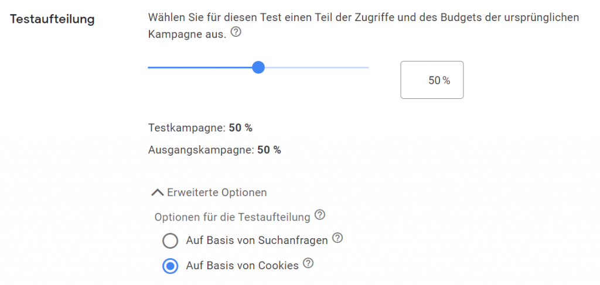Testaufteilung am besten auf 50/50 festlegen.
Nachdem du die Grundeinstellungen des Tests angelegt hast, musst du noch die Einstellungen zur zeitlichen Planung vornehmen. Dazu musst du festlegen, wann dein Test starten und wie lange er dauern soll. Tests sind erst dann aussagekräftig, wenn sie genügend Daten erhalten haben. Falls du ein bestimmtes Enddatum festlegen möchtest, solltest du den Test mindestens 2-3 Monate durchführen. Alternativ kannst du die Eingabe des Enddatums offen lassen und deinen Test laufend beobachten. Du erkennst an den Statistiken, wie sich dein Test entwickelt und ob sich beispielsweise ein Vorteil für deine neue Landingpage abzeichnet.
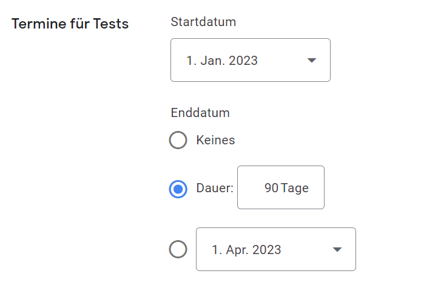Start- und eventuell ein Enddatum zum Test festlegen.
Synchronisierung der Kampagnen
Falls du die Einstellungen in deiner Ausgangskampagne veränderst, so kann dies Auswirkungen auf den gesamten Test haben. Optimalerweise änderst du während eines Tests nichts mehr in deiner Kampagne. Es könnte jedoch sein, dass sich beispielsweise deine Produktpreise, die auch in den Anzeigen genannt werden, verändert haben. Für diesen Fall ist der Punkt „Synchronisierung aktivieren“ sehr interessant. Bei Änderungen der Ausgangskampagne werden diese automatisch auch in die Testkampagne übernommen, damit die Änderungen keinen Einfluss auf den Test ausüben. Unterschiedliche Preise in den Textanzeigen würden sicherlich Auswirkungen auf das Klickverhalten haben und somit dann auch die Conversions für die jeweilige Kampagne verändern. In den meisten Fällen ist also eine Synchronisierung der beiden Kampagnen eine sinnvolle Einstellung.
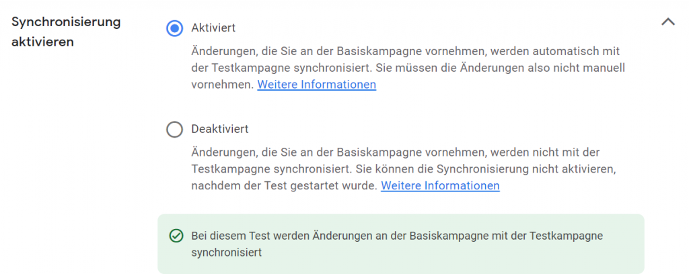Eine Synchronisierung der Kampagnen ist sinnvoll
Testdaten beobachten
So beobachtest du einen erstellten Test:
Klicke im Menü auf „Tests > Alle Tests“.
Klicke auf den Testnamen, dessen Leistung du sehen möchtest.
Du erhältst eine Tabelle mit der Zusammenfassung der Testergebnisse und eine Kurzübersicht mit unterschiedlichen KPIs zur Ausgangs- und Test-Kampagne.
An dieser Stelle kannst du auch per Klick auf den jeweiligen Link den „Test übernehmen“ oder den „Test beenden“ bzw. „entfernen“.
Zu den beiden Kampagnen (Ausgangs- und Testkampagne) kannst du dir unterschiedliche Kennzahlen anzeigen lassen, damit du beurteilen kannst, ob sich der Test erfolgreich entwickelt. Die aktuell sichtbaren Spalten können durch Klick auf das Icon „Spalten anpassen“ wie bei jedem anderen Bericht im Ads Konto verändert werden.
Zur Beurteilung deiner Kampagnen sind vor allem folgende Messwerte wichtig:
Impressionen
Klicks
CTR
Conversions
Kosten/Conv.
Neben den Daten zu den einzelnen Messwerten gibt es noch eine Zeile mit der Bezeichnung „Differenz (%)„. Dieser Wert spiegelt den Leistungsunterschied zwischen dem Test und der ursprünglichen Kampagne beim entsprechenden Messwert wider. Steht beispielsweise bei Conversions „+ 10 %“ , so hat der Test 10 % mehr Conversions erzielt, als die ursprüngliche Kampagne.
Die zweite Zeile trägt die Bezeichnung „95 %-Konfidenzintervall„. Dies steht für die mögliche Bandbreite für den Leistungsunterschied, der zwischen dem Test und der ursprünglichen Kampagne bestehen kann. Steht dort zum Beispiel [+ 10 %, + 13 %], dann kann die Leistung beim Test zwischen 10 % und 13 % höher liegen als bei der Ausgangskampagne. Sollte das Ergebnis des Tests statistisch signifikant sein, so wird dies zudem mit einem blauen Sternchen angezeigt.
Was bedeutet „Statistisch signifikant“?
Statistisch signifikante Daten sind mit hoher Wahrscheinlichkeit kein Zufall. Somit würden bei statistisch signifikanten Ergebnissen die Änderungen, die in der Testkampagne vorgenommen wurden, auch zukünftig mit hoher Wahrscheinlichkeit zu besseren Ergebnissen der Google Ads Werbekampagne führen. Bei positiven Ergebnissen, die statistisch signifikant sind, solltest du nicht weiter testen, sondern die Test-Kopie als aktive Kampagne weiterführen. Die Testeinstellungen überschreiben somit quasi die Ausgangskampagne.
Textanzeigen optimieren
Einfache Tests für deine Textanzeigen zu einer Kampagne kannst du ebenfalls in den „Benutzerdefinierten Tests“ erstellen. Die spezielle Funktion für „Textanzeigen optimieren“ ist dagegen eher für weitläufige Anzeigentests gedacht. Hier sollen mehrere Textanzeigen in vielen Kampagnen im Google Ads Konto gleichzeitig getestet werden. Diese Testmöglichkeit wird für grundlegende Anzeigentests genutzt. Wenn du beispielsweise testen möchtest, ob eine bestimmte Ansprache deiner Zielgruppe oder spezielle Call-to-Actions besser funktionieren, als die bestehende Elemente der Textanzeigen, dann solltest du auf die Möglichkeit „Textanzeigen optimieren“ zurückgreifen.
Folgende Ideen kannst du für grundlegende Anzeigentests in deinem Google Ads Konto nutzen:
Testen einer emotionalen Ansprache statt Fakten
Duzen statt Siezen in den Anzeigen
Call-to-Action: „Bestellen“ statt „Kaufen“
Hinweis auf Qualität statt Preisnennung
…
Test für Textanzeigen erstellen
So erstellst du die Anzeigentests im Google Ads Konto. Nachdem du unter „Tests > Alle Tests“ auf den blauen Kreis mit dem weißen Pluszeichen geklickt hast, wählst du als Option „Textanzeigen optimieren“ aus. Im nächsten Schritt kannst du aus alle Kampagne diejenigen herausfiltern, die du für deinen Anzeigentest nutzen möchtest. Wenn du also beispielsweise bestimmte Begriffe in den Titeln deiner Anzeigen verändern möchtest, kannst du den Anzeigentitel als Filterfeld auswählen und dort nach dem Begriff suchen, den du durch gerne durch andere Textbausteine ersetzen möchtest. Auf diese Weise findest du schnell alle Kampagnen und Anzeigen, die für deinen neuen Test in Frage kommen.
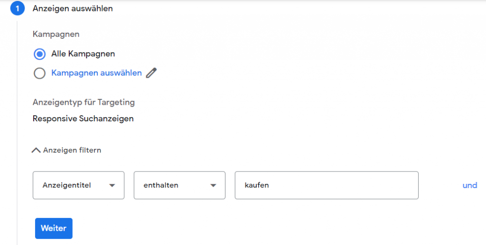Beispiel: Filtern aller Kampagnen im Konto mit bestimmten Begriff im Anzeigentitel
Nachdem du die Anzeigen herausgefiltert hast, kannst du die gewünschte Variation für deinen Anzeigentest erstellen. Du kannst beispielsweise durch „Suchen und ersetzen“ den Ausgangsbegriff in allen Titeln deiner Test-Anzeigentexte durch eine neue Textkombination ersetzen. In unserem Beispiel möchten wir statt „Jetzt kaufen“ den Call-to-Action „Hier bestellen“ in allen Anzeigen der gefilterten Kampagnen ersetzen. Beide Varianten (die ursprüngliche Anzeige und die neue Variante) werden dann analog zu den „Benutzerdefinierten Tests“ über einen gewissen Zeitraum im Ads Konto getestet.
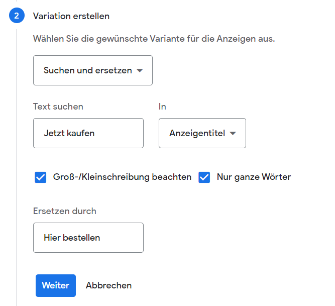Beispiel: Anzeigenvariante erstellen durch Austausch eines bestimmten Call-to-Action.
Nachdem die Variante erstellt wurde, müssen wiederum die grundlegenden Vorgaben festgelegt werden. Diese kennst du bereits von den Ausführungen zu den „Benutzerdefinierten Tests“.
Wir benötigen noch folgende Daten:
Einen Namen für die Testvariante
Ein Start- und Enddatum
Die gewünschte Testaufteilung – Am besten nutzen wir auch hier wieder die Aufteilung 50/50.
Test für Videoanzeigen
Zum Schluss werfen wir noch ein Blick auf die Tests für Videoanzeigen.
Der Test für Videoanzeigen im Google Ads Konto unterscheidet sich grundlegend von den bisher besprochenen Tests, da im Vorfeld bereits eine fertige Kampagne kopiert werden muss.
Die Option zum Testen von Videoanzeigen findest du wie die anderen Tests unter Tests >> Alle Tests nach dem Klick auf den blauen Kreis mit dem weißen Pluszeichen.
Anders als bei den bisher vorgestellten Tests muss zum Testen der Videoanzeigen im Vorfeld eine Kampagne kopiert werden. In der Kopie werden dann andere Videoanzeigen hinterlegt. Wir testen bei dieser Variante also nur die unterschiedliche Wirkung der Videos auf unsere Zielgruppe. Die Kampagnen sind ansonsten im Hinblick auf Grundeinstellungen und Targeting komplett gleich.
Schau dir dazu einmal die folgenden Best Practice Hinweise von Google an:
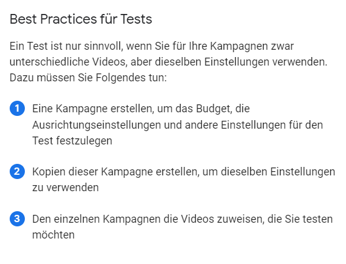Google Best Practice Tipps zum Test von Videoanzeigen
Für den Test der Videoanzeigen wählen wir die beiden vorher erstellten Videokampagnen aus. Einmal die Ausgangskampagne und einmal die Kopie mit den veränderten Videoanzeigen. Im Test werden die Kampagnen als Verzweigung bezeichnet. In der einfachsten Testvariante nutzen wir zwei Kampagnen (Verzweigungen), die jeweils 50% der Zugriffe erhalten.
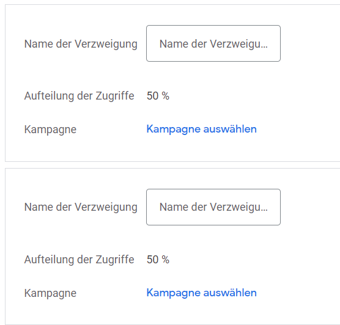Testaufteilung mit zwei Verzweigungen und jeweils 50% des Traffics.
Bei der Eingabe der Testzeiten unterscheidet sich der Videoanzeigen-Test ebenfalls von den anderen Tests. Das Startdatum wird automatisch auf den Termin gesetzt, an dem der Test erstellt wurde. Als Ziel werden zudem von Google Ads die Conversions festgelegt. Als Testzeitraum legt das System den Zeitraum fest, in dem mindestens 100 Conversions pro Kampagnenversion erzielt worden sind.
Falls du einen Videotest sinnvoll nutzen möchtest, so solltest du vorher genau überlegen, welche Conversion du für die Videokampagne vorgeben willst.
Standard-Conversions wie ein Produktkauf oder eine Lead Generierung sind mit einer Videokampagne schwer zu erreichen. Für Videokampagnen solltest du daher besser niederschwellige Ziele, wie den Besuch einer bestimmten Webseite mit Informationen zu dem beworbene Produkt als Conversion festlegen. Durch diese niederschwelligen Conversions kann ein Videoanzeigen-Test in einem überschaubaren Zeitraum verwertbare Ergebnisse liefern.
Hinweis zu Laufzeit und Erfolgskontrolle der Videoanzeigen im Google Ads Konto.
Fazit zu den Tests im Google Ads Konto
Die Tests im Google Ads Konto sind hilfreich, um neue Ideen zu testen. Der wichtigste Vorteil der Test im Google Ads Konto besteht darin, dass Änderungen an einer Test-Kopie der Ursprungskampagne zur gleichen Zeit getestet werden können und nicht zeitlich versetzt getestet werden müssen. Dadurch haben Änderungen der äußeren Umstände keinen Einfluss auf Erfolg oder Misserfolg eines Tests. Es muss zudem kein zusätzliches Budget für einen Test eingesetzt werden.
Am Ende gibt das Google Ads System auch noch statistisch abgesicherte Hinweise zum Erfolg der veränderten Ausgangskampagne. Somit können erfolgreiche Testkampagnen später ohne Bedenken als aktive Kampagnen übernommen werden.
Die Google Ads Tests sollten daher in keinem Ads Konto fehlen. Es gibt viel zu testen!
Häufig gestellte Fragen (FAQs) zu Google Ads A/B Tests:
Was sind die Google Ads A/B-Tests?
A/B-Tests bei Google Ads – auch Split-Testing genannt – sind darauf ausgerichtet, zwei Varianten einer Kampagne gleichzeitig laufen zu lassen und gegeneinander zu testen. Variante A ist dabei die Originalkampagne, während bei Variante B ein Kriterium verändert wurde. Eine parallele Anzeigenschaltung ist für die Vergleichbarkeit notwendig.
Welche Vorteile haben die Google Ads A/B-Tests?
Mit A/B Tests lässt sich der ROAS steigern und Geld sparen. Außerdem sind A/B Tests eine effiziente Methode um die Zielgruppe besser kennen und verstehen zu lernen.
Wie setzt man A/B-Tests in Google Ads richtig ein?
Stelle Hypothesen auf. Erfolgreiche Google Ads A/B-Tests basieren auf Zielen, die mit einer Hypothese verbunden sind. Bevor du die Tests startest, analysiere deine aktuelle Webseite und identifiziere Probleme und Optimierungspotenziale. Starte mit einfachen Tests und teste nie mehrere Optimierungsideen gleichzeitig!

{kind=link}
{kind=link}
{kind=link}
{kind=link}
{kind=link}
{kind=link}
{kind=link}
{kind=link}
{kind=link}
{kind=link}
{kind=link}
{kind=link}
{kind=link}
{kind=link}
{kind=link}
{kind=link}
{kind=link}